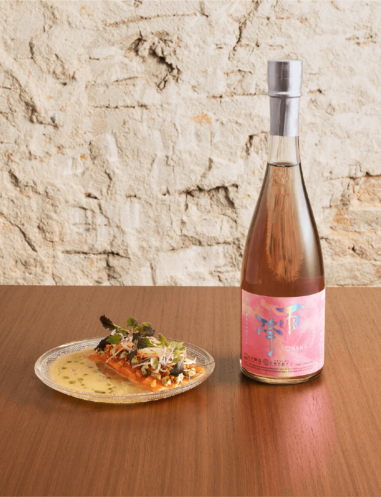
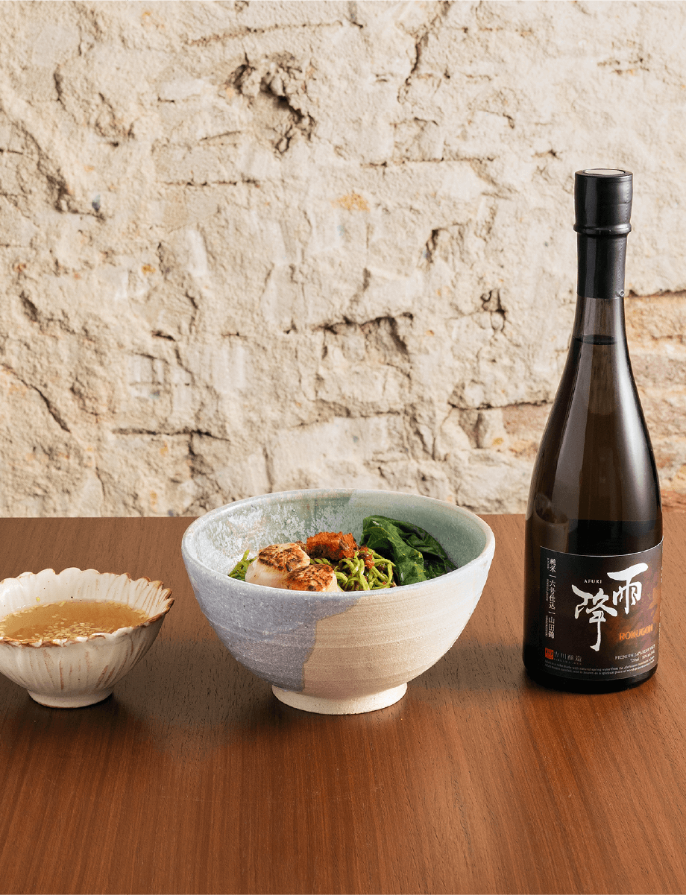
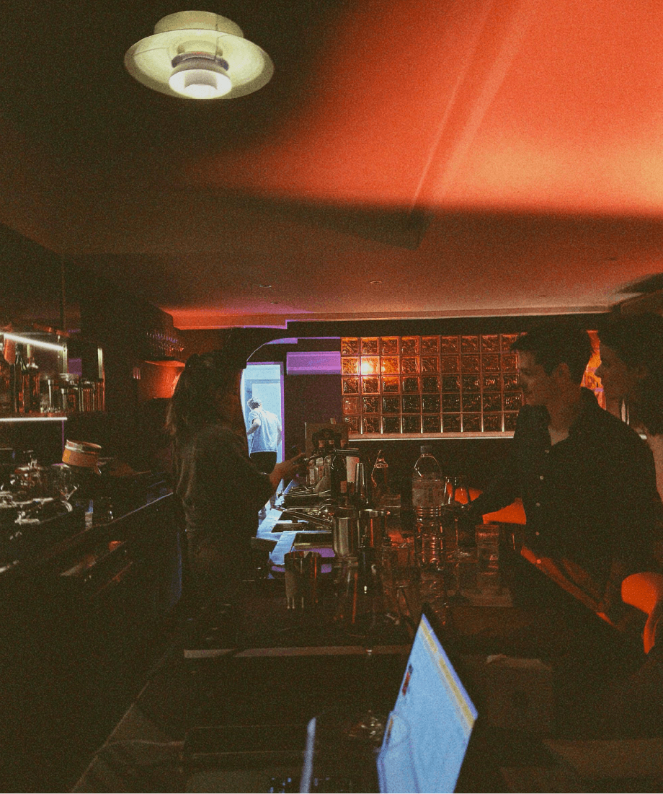

Pairing 1


Pairing 2

ASIAN BISTRO
NOU
45 Craig Road, Singapore 089683
Tel: 8768 1224
https://www.instagram.com/nou__sg/NOU is a unique mix of cocktails, wine and noodles. Having recently opened at Craig Road, the modern minimalist setting offers an inviting space with an array of fresh and innovative cocktails, a carefully curated wine list and a selection of Asian-inspired noodle dishes.
Head Chef Petrina Loh
Chef Petrina is a former private banker turned award-winning female chef-owner in Singapore. At 29, she was formally trained in California at Le Cordon Bleu. Her strong penchant for culture, food anthropology and artisanal cooking techniques gives her inspiration to create progressive fusion cuisine.